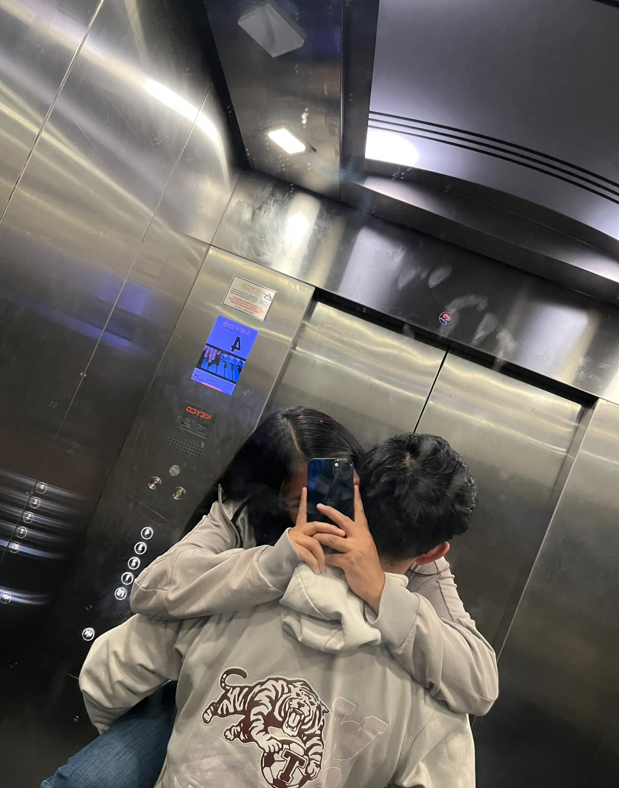
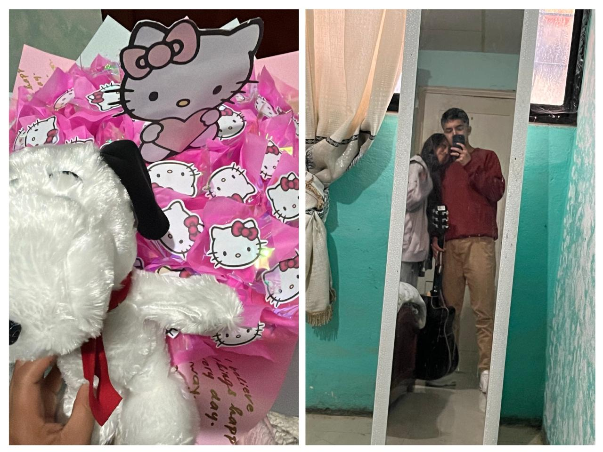

Toca el sobre
Hola amor felíz 3 meses de novios, tres meses de felicidad, problemas y tristezas y si, si ha sido duro para los dos la verdad pero lo que me he dado cuenta es que en verdad yo si quiero una vida contigo, no sé si estoy hablando apresuradamente pero quiero luchar por lo nuestro porque te quiero a ti y no quiero que por un descuido de los dos nos separemos, de mi parte te daré todo mi amor y mi cariño, nos hemos sentido distanciados y recuerdo que me dijiste que no importa que estemos distanciados o hablemos a cada rato tú me sigues amando como el primer día y yo te amare siempre porque eres la dueña de mi corazon a quien quiero a mi lado como una compañera de vida, AGAMOS LAS COSAS BIEN AMOR SI LOS DOS COMO UNA PAREJA QUE SOMOS.
En los días malos o buenos que sé tener solo miro tu cajita de cartas de besos que me diste por nuestro primer mes de novios y me sé quedar pensando lo cuánto me amas y lo cuánto te amo mi amor y todas las cartitas son mis favoritas pero hay unas que me enamora ver y dicen: "no te cambiaría por nada", "solo quiero un futuro contigo", "no te rindas", "te regalo mis besos en papel para cuando me extrañes", "eres un gran hombre, estoy orgullosa de ti mi niño", "me gusta tu manera de salir adelante aunque te sientas estancado", "te ama la Katy", "feliz primer mes", "todo pasa y sana amor", "siempre seré tu apoyo", "te admiro", "te amaré x100pre", "no dudes que te amo", "tú no vales la pena, tú vales la vida".
Unas de las cuntas cartas que cuando estoy triste las veo y percibo tu olor de tu perfumeque sige enfrascado amor. No sé, creo que ambos tenemos la duda o esa espinita en nuestro pensamiento que nos dice que "y si se cansa de mí porque esto se está volviendo repetitivo o alguien le ha de estar echando los perros jaja", o bueno, para mí sí me atormenta, pero quiero decirte que si tú tienes ese pensamiento de que te voy a engañar, te amo a ti mi corazón, mi pensamiento, mis ganas de salir adelante es por ti y porque quiero darte una buena vida. Y si tienes ese pensamiento de que me engañaran por no tener relaciones, eso a mí no me importa mi amor, lo que me importa es que tú estés conmigo, y me lo has demostrado estando en las buenas y en las malas. Cada vez que salgo, sea a comprar algo, sea por el centro o más arriba, y mujeres se me quedan viendo, yo mijo sigo fijo a la calle pa no caerme y pensando en ti, en cómo estará mi amorcito, si ya comería, o qué estará haciendo, con qué perro estará hablando jaja, y eso. Te amo mi niña hermosa y espero que sigamos cumpliendo meses y años juntos, si quieres tú y si Dios lo permite mi amor.
TE AMO MI AMOR, TU NOVIO QUE TE AMA Y TE EXTRAÑA MUCHO .

Te amo con todo mi corazón y espero que sigamos cumpliendo meses y años juntos, si quieres tú y si Dios lo permite mi amor También dime si estoy haciendo las cosas bien o mal para poder mejorar y ser un mejor novio para ti mi amor, no quiero que me remplaces mejor enseñame a ser el hombre que quieres que sea para ti y que te haga feliz mi amor, TE AMO MI AMOR, TU NOVIO QUE TE AMA Y TE EXTRAÑA MUCHO. atte: SS